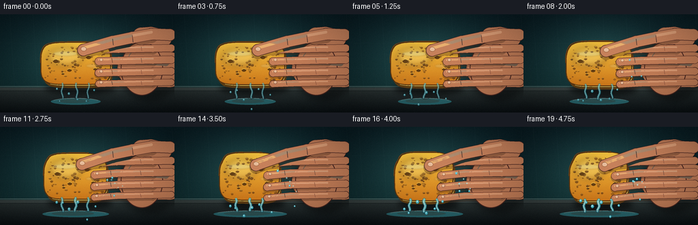
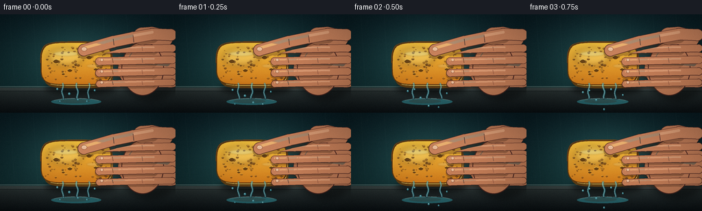

CODING AGENTS AS PIXEL WORLD MODELS
traex/DeepSeek-V4.1-Flash · phygen_011
点击播放 · 原生 RGB 像素
逐轮保存的候选
回放视频、检查图与代码变化。
每份候选均可单独播放。实际图片检查记录在下方工具轨迹中。
候选 01播放与检查图
点击播放 · 原生 RGB 像素


展开代码变化
--- 上一保存版本
+++ 本次保存版本
@@ -0,0 +1,389 @@
+"""Procedural RGB video: a water-filled sponge under an intensifying hand squeeze."""
+
+from __future__ import annotations
+
+import math
+import random
+from pathlib import Path
+
+import numpy as np
+from PIL import Image, ImageDraw, ImageFilter
+
+from artifact_io import save
+
+
+W, H = 256, 144
+SS = 4
+FW, FH = W * SS, H * SS
+N, FPS = 20, 4.0
+
+
+def sc(value: float) -> int:
+ return int(round(value * SS))
+
+
+def pt(x: float, y: float) -> tuple[int, int]:
+ return sc(x), sc(y)
+
+
+def mix(a: tuple[int, int, int], b: tuple[int, int, int], t: float) -> tuple[int, int, int]:
+ return tuple(int(round(a[i] + (b[i] - a[i]) * t)) for i in range(3))
+
+
+def lighter(c: tuple[int, int, int], amount: float) -> tuple[int, int, int]:
+ return mix(c, (255, 255, 255), amount)
+
+
+def darker(c: tuple[int, int, int], amount: float) -> tuple[int, int, int]:
+ return mix(c, (0, 0, 0), amount)
+
+
+def capsule(
+ draw: ImageDraw.ImageDraw,
+ points: list[tuple[float, float]],
+ width: float,
+ fill: tuple[int, int, int, int],
+ outline: tuple[int, int, int, int] | None = None,
+ outline_width: float = 0.0,
+) -> None:
+ scaled = [pt(x, y) for x, y in points]
+ if outline is not None:
+ draw.line(scaled, fill=outline, width=sc(outline_width + width), joint="curve")
+ radius = sc((outline_width + width) / 2)
+ for x, y in scaled:
+ draw.ellipse((x - radius, y - radius, x + radius, y + radius), fill=outline)
+ draw.line(scaled, fill=fill, width=sc(width), joint="curve")
+ radius = sc(width / 2)
+ for x, y in scaled:
+ draw.ellipse((x - radius, y - radius, x + radius, y + radius), fill=fill)
+
+
+def background(frame_index: int) -> Image.Image:
+ yy = np.linspace(0.0, 1.0, FH, dtype=np.float32)[:, None]
+ xx = np.linspace(0.0, 1.0, FW, dtype=np.float32)[None, :]
+ top = np.array([10, 29, 34], dtype=np.float32)
+ bottom = np.array([18, 49, 51], dtype=np.float32)
+ rgb = top[None, None, :] * (1.0 - yy[..., None]) + bottom[None, None, :] * yy[..., None]
+ rgb = np.broadcast_to(rgb, (FH, FW, 3)).copy()
+
+ # Soft window light behind the subject and a dark kitchen counter.
+ glow = np.exp(-(((xx - 0.46) / 0.34) ** 2 + ((yy - 0.42) / 0.38) ** 2))
+ rgb += glow[..., None] * np.array([19, 34, 31], dtype=np.float32)
+ counter_y = 0.745
+ counter = yy > counter_y
+ counter_t = np.clip((yy - counter_y) / (1.0 - counter_y), 0.0, 1.0)
+ counter_rgb = (
+ np.array([45, 54, 53], dtype=np.float32)[None, None, :] * (1.0 - counter_t[..., None])
+ + np.array([11, 17, 20], dtype=np.float32)[None, None, :] * counter_t[..., None]
+ )
+ rgb = np.where(counter[..., None], counter_rgb, rgb)
+
+ image = Image.fromarray(np.clip(rgb, 0, 255).astype(np.uint8), "RGB").resize((FW, FH), Image.Resampling.NEAREST)
+ draw = ImageDraw.Draw(image, "RGBA")
+
+ # Tiled backsplash and counter edge, kept subtle so the squeeze stays dominant.
+ for x in range(-20, W + 40, 34):
+ draw.line([pt(x, 0), pt(x + 7, 107)], fill=(155, 201, 195, 10), width=sc(0.45))
+ for y in (42, 79):
+ draw.line([pt(0, y), pt(W, y + 2)], fill=(185, 223, 212, 8), width=sc(0.5))
+ draw.rectangle([pt(0, 105.5), pt(W, 112)], fill=(112, 126, 121, 42))
+ draw.line([pt(0, 105.5), pt(W, 105.5)], fill=(190, 207, 196, 90), width=sc(0.8))
+ draw.line([pt(0, 112), pt(W, 112)], fill=(5, 10, 12, 130), width=sc(0.8))
+
+ # Very fine deterministic grain prevents the broad background from looking flat.
+ rng = np.random.default_rng(4100 + frame_index)
+ grain = rng.normal(0.0, 1.25, (FH, FW, 1)).astype(np.float32)
+ arr = np.asarray(image, dtype=np.float32) + grain
+ return Image.fromarray(np.clip(arr, 0, 255).astype(np.uint8), "RGB")
+
+
+def sponge_outline(cx: float, cy: float, hw: float, hh: float, pressure: float) -> list[tuple[float, float]]:
+ points: list[tuple[float, float]] = []
+ for i in range(144):
+ a = 2.0 * math.pi * i / 144.0
+ ca, sa = math.cos(a), math.sin(a)
+ # A high-exponent superellipse reads as a soft rectangular kitchen sponge.
+ x = cx + hw * math.copysign(abs(ca) ** (2.0 / 4.3), ca)
+ y = cy + hh * math.copysign(abs(sa) ** (2.0 / 4.3), sa)
+
+ # The thumb presses the upper-left edge; fingers compress the right edge.
+ if x < cx:
+ x += 3.8 * pressure * math.exp(-((y - 46.0) / 11.0) ** 2)
+ if x > cx:
+ notch = 0.0
+ for fy in (50.0, 67.0, 84.0, 100.0):
+ notch += math.exp(-((y - fy) / 5.7) ** 2)
+ x -= 2.2 * pressure * min(1.0, notch)
+
+ # Tiny organic unevenness makes the body feel soft rather than geometric.
+ wobble = 0.8 * math.sin(3.0 * a + 0.7) + 0.45 * math.sin(7.0 * a - 1.2)
+ radial = 1.0 + wobble * 0.006
+ points.append((cx + (x - cx) * radial, cy + (y - cy) * radial))
+ return points
+
+
+def draw_sponge(base: Image.Image, pressure: float, frame_index: int) -> tuple[float, float, float, float]:
+ cx = 111.0 - 0.8 * pressure
+ cy = 72.0 + 1.0 * pressure
+ hw = 51.5 - 8.7 * pressure
+ hh = 30.8 + 5.2 * pressure
+ outline = sponge_outline(cx, cy, hw, hh, pressure)
+ scaled = [pt(x, y) for x, y in outline]
+
+ shadow = Image.new("RGBA", (FW, FH), (0, 0, 0, 0))
+ sd = ImageDraw.Draw(shadow)
+ sd.ellipse([pt(cx - hw + 5, cy + hh - 5), pt(cx + hw + 8, cy + hh + 15)], fill=(0, 0, 0, 135))
+ shadow = shadow.filter(ImageFilter.GaussianBlur(sc(4.0)))
+ base.alpha_composite(shadow) if base.mode == "RGBA" else base.paste(
+ Image.alpha_composite(base.convert("RGBA"), shadow).convert("RGB")
+ )
+
+ # Thickness on the lower-right gives the sponge volume.
+ thick = [(x + 3.0, y + 5.0) for x, y in outline]
+ ImageDraw.Draw(base, "RGBA").polygon([pt(x, y) for x, y in thick], fill=(93, 61, 20, 255))
+
+ mask = Image.new("L", (FW, FH), 0)
+ ImageDraw.Draw(mask).polygon(scaled, fill=255)
+
+ y0 = max(0, sc(cy - hh - 3))
+ y1 = min(FH, sc(cy + hh + 4))
+ grad_y = np.linspace(0.0, 1.0, max(1, y1 - y0), dtype=np.float32)[:, None, None]
+ c_top = np.array([244, 197, 64], dtype=np.float32)
+ c_bottom = np.array([205, 116, 24], dtype=np.float32)
+ grad = c_top[None, None, :] * (1.0 - grad_y) + c_bottom[None, None, :] * grad_y
+ grad = np.broadcast_to(grad, (max(1, y1 - y0), FW, 3)).copy()
+ body = Image.new("RGB", (FW, FH), (205, 116, 24))
+ body.paste(Image.fromarray(np.clip(grad, 0, 255).astype(np.uint8), "RGB"), (0, y0))
+
+ # Large soft left-side illumination.
+ shine = Image.new("RGBA", (FW, FH), (0, 0, 0, 0))
+ sh = ImageDraw.Draw(shine)
+ sh.ellipse([pt(cx - hw * 0.80, cy - hh * 0.73), pt(cx + hw * 0.20, cy + hh * 0.10)],
+ fill=(255, 231, 130, 92))
+ shine = shine.filter(ImageFilter.GaussianBlur(sc(4.2)))
+ body = Image.alpha_composite(body.convert("RGBA"), shine).convert("RGB")
+
+ # Pores and small pits deform with the body and sell the sponge material.
+ pores = Image.new("RGBA", (FW, FH), (0, 0, 0, 0))
+ pd = ImageDraw.Draw(pores)
+ rng = random.Random(9307)
+ for _ in range(92):
+ u = rng.uniform(-0.88, 0.88)
+ v = rng.uniform(-0.78, 0.78)
+ px = cx + u * hw
+ py = cy + v * hh
+ rx = rng.uniform(0.65, 2.2) * (1.0 + 0.22 * pressure)
+ ry = rx * rng.uniform(0.55, 1.10)
+ tone = rng.randint(74, 126)
+ pd.ellipse([pt(px - rx, py - ry), pt(px + rx, py + ry)], fill=(tone, int(tone * 0.58), 20, rng.randint(115, 190)))
+ if rx > 1.3:
+ pd.arc([pt(px - rx * 0.9, py - ry * 0.9), pt(px + rx * 0.9, py + ry * 0.9)],
+ 198, 330, fill=(255, 225, 106, 120), width=sc(0.45))
+ # A few broad holes create the water-filled, porous silhouette.
+ for u, v, r in [(-0.57, -0.12, 4.0), (-0.18, 0.31, 3.2), (0.37, -0.30, 3.8), (0.56, 0.26, 2.7), (-0.37, 0.48, 2.2)]:
+ px, py = cx + u * hw, cy + v * hh
+ pd.ellipse([pt(px - r, py - r * 0.72), pt(px + r, py + r * 0.72)], fill=(84, 50, 15, 220))
+ pd.arc([pt(px - r, py - r * 0.72), pt(px + r, py + r * 0.72)], 195, 335,
+ fill=(255, 222, 101, 170), width=sc(0.7))
+
+ pores.putalpha(Image.composite(pores.getchannel("A"), Image.new("L", (FW, FH), 0), mask))
+ body = Image.alpha_composite(body.convert("RGBA"), pores).convert("RGB")
+ base.paste(body, (0, 0), mask)
+
+ # Rounded rim, inner highlight, and a wet glint along the top.
+ d = ImageDraw.Draw(base, "RGBA")
+ d.line(scaled + [scaled[0]], fill=(91, 53, 16, 235), width=sc(1.55), joint="curve")
+ d.line([pt(x + 1.2, y + 1.0) for x, y in outline[:50]], fill=(255, 224, 109, 150), width=sc(0.65), joint="curve")
+ d.line([pt(x - 1.0, y - 1.0) for x, y in outline[72:113]], fill=(133, 72, 16, 120), width=sc(0.8), joint="curve")
+
+ wet = Image.new("RGBA", (FW, FH), (0, 0, 0, 0))
+ wd = ImageDraw.Draw(wet)
+ wd.ellipse([pt(cx - 33, cy - 18), pt(cx + 3, cy - 11)], fill=(201, 248, 245, 50))
+ wd.ellipse([pt(cx + 15, cy + 1), pt(cx + 35, cy + 6)], fill=(222, 255, 250, 34))
+ wet = wet.filter(ImageFilter.GaussianBlur(sc(1.1)))
+ wet.putalpha(Image.composite(wet.getchannel("A"), Image.new("L", (FW, FH), 0), mask))
+ base.alpha_composite(wet) if base.mode == "RGBA" else base.paste(
+ Image.alpha_composite(base.convert("RGBA"), wet).convert("RGB")
+ )
+ return cx, cy, hw, hh
+
+
+def draw_hand_back(base: Image.Image, pressure: float) -> None:
+ layer = Image.new("RGBA", (FW, FH), (0, 0, 0, 0))
+ d = ImageDraw.Draw(layer)
+ skin = (190, 122, 85, 255)
+ edge = (75, 39, 32, 255)
+
+ # Soft contact shadow separates the hand from the wall.
+ shadow = Image.new("RGBA", (FW, FH), (0, 0, 0, 0))
+ sd = ImageDraw.Draw(shadow)
+ sd.ellipse([pt(174, 37), pt(266, 127)], fill=(0, 0, 0, 110))
+ shadow = shadow.filter(ImageFilter.GaussianBlur(sc(5.0)))
+ layer = Image.alpha_composite(layer, shadow)
+ d = ImageDraw.Draw(layer)
+
+ capsule(d, [(248, 81), (218, 81), (198, 80)], 51, skin, edge, 1.1)
+ d.ellipse([pt(177, 40), pt(239, 119)], fill=skin, outline=edge, width=sc(1.2))
+ capsule(d, [(239, 35), (221, 31), (207, 32)], 25, skin, edge, 1.0)
+
+ # Broad palm highlights.
+ capsule(d, [(243, 71), (217, 69), (199, 69)], 10, (217, 151, 112, 135))
+ d.arc([pt(184, 48), pt(232, 111)], 213, 308, fill=(226, 161, 120, 125), width=sc(1.2))
+ base.paste(Image.alpha_composite(base.convert("RGBA"), layer).convert("RGB"), (0, 0))
+
+
+def draw_fingers(base: Image.Image, pressure: float) -> None:
+ layer = Image.new("RGBA", (FW, FH), (0, 0, 0, 0))
+ d = ImageDraw.Draw(layer)
+ edge = (77, 40, 33, 255)
+ skin = (198, 127, 88, 255)
+ highlight = (232, 168, 126, 210)
+ crease = (127, 72, 56, 155)
+ nail = (233, 188, 153, 255)
+ nail_edge = (153, 94, 72, 210)
+
+ finger_y = [50.0, 67.0, 84.0, 100.0]
+ widths = [10.5, 11.0, 10.6, 9.2]
+ for i, (y, width) in enumerate(zip(finger_y, widths)):
+ tip_x = 145.5 - (10.2 + i * 0.7) * pressure
+ tip_y = y + 1.6 + 3.2 * pressure
+ mid_x = 174.0 - 5.0 * pressure
+ path = [(251.0, y - 0.5), (224.0, y + 0.1), (mid_x, y + 1.1), (tip_x, tip_y)]
+
+ # Contact shadow under each finger makes the grip feel forceful.
+ capsule(d, [(x, yy + 2.3) for x, yy in path[1:]], width + 2.3, (66, 38, 21, 82))
+ capsule(d, path, width, skin, edge, 1.15)
+ capsule(d, [(x, yy - width * 0.20) for x, yy in path[1:]], width * 0.23, highlight)
+
+ # Two creases indicate the bent joints without adding visual noise.
+ for cxp in (207.0 - 2.0 * pressure, 164.0 - 3.5 * pressure):
+ cy = y + 1.1
+ d.line([pt(cxp, cy - width * 0.35), pt(cxp + 1.1, cy + width * 0.24)],
+ fill=crease, width=sc(0.8))
+
+ nx = tip_x + 3.8
+ ny = tip_y - 2.0
+ d.ellipse([pt(nx - 3.0, ny - 2.2), pt(nx + 2.3, ny + 2.1)], fill=nail, outline=nail_edge, width=sc(0.65))
+ d.arc([pt(nx - 2.4, ny - 1.8), pt(nx + 1.7, ny + 1.4)], 195, 330, fill=(255, 229, 203, 220), width=sc(0.5))
+
+ # The thumb crosses the top and bears down as pressure rises.
+ thumb_tip = (122.5 - 3.8 * pressure, 52.0 + 4.8 * pressure)
+ thumb_path = [(249.0, 30.0), (222.0, 29.0), (194.0, 34.0), (165.0, 40.0), thumb_tip]
+ capsule(d, [(x, y + 3.2) for x, y in thumb_path[1:]], 19.5, (67, 38, 21, 82))
+ capsule(d, thumb_path, 16.5, (200, 130, 91, 255), edge, 1.25)
+ capsule(d, [(x, y - 3.1) for x, y in thumb_path[1:]], 4.2, (235, 174, 132, 185))
+ d.line([pt(194, 31), pt(195, 41)], fill=crease, width=sc(0.9))
+ d.line([pt(165, 36), pt(166, 45)], fill=crease, width=sc(0.9))
+ d.ellipse([pt(thumb_tip[0] - 4.0, thumb_tip[1] - 4.7), pt(thumb_tip[0] + 4.6, thumb_tip[1] + 1.7)],
+ fill=nail, outline=nail_edge, width=sc(0.8))
+ d.arc([pt(thumb_tip[0] - 3.1, thumb_tip[1] - 4.0), pt(thumb_tip[0] + 3.3, thumb_tip[1] + 0.8)],
+ 205, 330, fill=(255, 230, 207, 230), width=sc(0.65))
+
+ base.paste(Image.alpha_composite(base.convert("RGBA"), layer).convert("RGB"), (0, 0))
+
+
+def draw_water(base: Image.Image, pressure: float, t: float, cy: float, hh: float) -> None:
+ water = Image.new("RGBA", (FW, FH), (0, 0, 0, 0))
+ d = ImageDraw.Draw(water)
+ strength = 0.16 + 0.84 * pressure
+
+ # Growing puddle on the countertop.
+ puddle_hw = 31.0 + 27.0 * strength
+ d.ellipse([pt(111 - puddle_hw, 123.0), pt(111 + puddle_hw, 132.5)], fill=(57, 173, 185, 122))
+ d.ellipse([pt(111 - puddle_hw * 0.72, 124.2), pt(111 + puddle_hw * 0.55, 130.0)], fill=(104, 220, 221, 68))
+ d.arc([pt(111 - puddle_hw * 0.90, 122.8), pt(111 + puddle_hw * 0.91, 131.2)],
+ 190, 350, fill=(211, 252, 247, 115), width=sc(0.8))
+
+ # Main falling threads, with flowing highlights.
+ outlet_data = [(-19.0, 0.05, 0.85), (2.0, 0.38, 1.0), (20.0, 0.70, 0.78)]
+ for ox, phase, flow in outlet_data:
+ start_x = 110.0 + ox - 1.5 * pressure
+ start_y = cy + hh - 2.0
+ sway = 1.6 * math.sin((t * 5.5 + phase) * math.tau)
+ end_y = 124.0 - 1.5 * (phase + t * 2.0) % 1.5
+ points = []
+ for k in range(9):
+ u = k / 8.0
+ px = start_x + sway * u + 1.1 * math.sin(u * 8.0 + phase * 9.0)
+ py = start_y + (end_y - start_y) * u
+ points.append((px, py))
+ width = (1.2 + 1.8 * strength) * flow
+ capsule(d, points, width + 1.4, (22, 111, 137, int(90 + 65 * strength)))
+ capsule(d, points, width, (104, 223, 231, int(135 + 65 * strength)))
+ capsule(d, [(x - 0.35, y) for x, y in points[1:]], max(0.55, width * 0.30),
+ (232, 255, 252, int(125 + 85 * strength)))
+
+ # Individual drops: deterministic looping ballistic paths.
+ drop_specs = [
+ (84, 108, -4, 0.14, 2.0), (100, 108, 2, 0.47, 2.4), (123, 109, 5, 0.72, 1.8),
+ (136, 108, 7, 0.28, 1.7), (93, 109, -7, 0.82, 1.6), (114, 110, -1, 0.61, 2.2),
+ (150, 64, 22, 0.18, 1.7), (155, 77, 27, 0.54, 1.5), (158, 91, 20, 0.86, 1.4),
+ ]
+ for idx, (x0, y0, vx, phase, radius) in enumerate(drop_specs):
+ cycle = (t * (1.9 + 0.11 * idx) + phase) % 1.0
+ if idx >= 6 and strength < 0.45:
+ continue
+ age = cycle
+ x = x0 + vx * age
+ y = y0 + (19.0 + 5.0 * (idx % 3)) * age ** 1.42
+ r = radius * (0.84 + 0.16 * (1.0 - age)) * (0.65 + 0.35 * strength)
+ alpha = int(135 + 110 * strength)
+ d.ellipse([pt(x - r, y - r * 1.15), pt(x + r, y + r * 1.15)], fill=(61, 184, 204, alpha))
+ d.ellipse([pt(x - r * 0.50, y - r * 0.62), pt(x + r * 0.22, y + r * 0.16)],
+ fill=(225, 255, 252, min(255, alpha + 45)))
+
+ # Tiny side spray at the fingertips under maximum force.
+ if pressure > 0.52:
+ for i in range(4):
+ a = (t * 1.7 + i * 0.23) % 1.0
+ sx = 159.0 + 21.0 * a
+ sy = 74.0 + 3.0 * i + 13.0 * a * a
+ rr = 0.8 + 0.45 * (1.0 - a)
+ d.ellipse([pt(sx - rr, sy - rr), pt(sx + rr, sy + rr)], fill=(180, 244, 241, int(190 * pressure)))
+
+ # Impact rings where the largest streams meet the puddle.
+ for k, x in enumerate((91.0, 112.0, 130.0)):
+ phase = (t * 2.2 + k * 0.29) % 1.0
+ rw = 2.0 + 4.2 * phase
+ d.arc([pt(x - rw, 122.5 - rw * 0.28), pt(x + rw, 122.5 + rw * 0.28)],
+ 10, 170, fill=(209, 251, 246, int(130 * (1.0 - phase) * strength)), width=sc(0.6))
+
+ base.paste(Image.alpha_composite(base.convert("RGBA"), water).convert("RGB"), (0, 0))
+
+
+def finish_frame(image: Image.Image, frame_index: int) -> np.ndarray:
+ # Lens vignette, a faint cool water reflection, and controlled film grain.
+ arr = np.asarray(image.resize((W, H), Image.Resampling.LANCZOS), dtype=np.float32)
+ yy, xx = np.mgrid[0:H, 0:W]
+ nx = (xx - W * 0.5) / (W * 0.55)
+ ny = (yy - H * 0.49) / (H * 0.56)
+ vignette = np.clip(1.0 - 0.20 * (nx * nx + ny * ny), 0.72, 1.0)
+ arr *= vignette[..., None]
+ arr[..., 2] += np.clip(8.0 - yy * 0.055, 0.0, 8.0) * 0.16
+ rng = np.random.default_rng(2200 + frame_index)
+ arr += rng.normal(0.0, 0.72, (H, W, 1)).astype(np.float32)
+ return np.clip(arr, 0, 255).astype(np.uint8)
+
+
+def render_frame(frame_index: int) -> np.ndarray:
+ t = frame_index / (N - 1)
+ eased = t * t * (3.0 - 2.0 * t)
+ pressure = 0.055 + 0.945 * eased ** 1.16
+
+ image = background(frame_index).convert("RGBA")
+ draw_hand_back(image, pressure)
+ cx, cy, hw, hh = draw_sponge(image, pressure, frame_index)
+ draw_fingers(image, pressure)
+ draw_water(image, pressure, t, cy, hh)
+ return finish_frame(image.convert("RGB"), frame_index)
+
+
+def main() -> None:
+ case_dir = Path(__file__).resolve().parent
+ frames = np.stack([render_frame(i) for i in range(N)])
+ save(frames, case_dir)
+ print(f"saved {frames.shape} RGB frames to {case_dir}")
+
+
+if __name__ == "__main__":
+ main()
可观测工具轨迹
实际执行的命令与返回图片。
命令 1exit 0
/bin/bash -c "pwd && rg --files -g 'prompt.txt' -g 'GENERATION_RULES.md' -g 'task_spec.json' -g '"'!node_modules'"'"
命令 2exit 0
/bin/bash -c 'ls -la'
命令 3exit 0
/bin/bash -c 'cat prompt.txt'
命令 4exit 0
/bin/bash -c 'cat GENERATION_RULES.md'
命令 5exit 0
/bin/bash -c 'cat task_spec.json'
命令 6exit 0
/bin/bash -c "sed -n '1,240p' artifact_io.py && printf '\\n---PLAYER---\\n' && sed -n '1,260p' player_template.html"
命令 7exit 1
/bin/bash -c 'python generate.py'
命令 8exit 0
/bin/bash -c 'python generate.py'
命令 9exit 0
/bin/bash -c "python - <<'PY'
from PIL import Image
im=Image.open('inspection.png')
print('inspection', im.size)
im.resize((im.width*2,im.height*2), Image.Resampling.NEAREST).save('.tmp/inspection_2x.png')
im2=Image.open('transition_check.png')
im2.resize((im2.width*2,im2.height*2), Image.Resampling.NEAREST).save('.tmp/transition_2x.png')
PY"命令 10exit 0
/bin/bash -c "ls -lh index.html pixels.npz inspection.png transition_check.png frames/00.png frames/19.png && python - <<'PY' from PIL import Image import numpy as np for p in ['frames/00.png','frames/05.png','frames/10.png','frames/15.png','frames/19.png']: a=np.asarray(Image.open(p)).astype(float) print(p, 'mean', a.mean((0,1)).round(1), 'std', a.std().round(1), 'dark%', round(100*(a.mean(2)<12).mean(),1)) PY"
命令 11exit 0
/bin/bash -c "python - <<'PY'
from PIL import Image
import numpy as np
chars=' .:-=+*#%@'
for fn in ['frames/00.png','frames/09.png','frames/19.png']:
a=np.asarray(Image.open(fn).convert('L').resize((64,36)))
print('\\n',fn)
for row in a:
print(''.join(chars[min(9,int(v)*10//256)] for v in row))
PY"命令 12exit 0
/bin/bash -c "python - <<'PY'
from pathlib import Path
import json, re
import numpy as np
from PIL import Image
spec=json.loads(Path('task_spec.json').read_text())
n,h,w,fps=spec['frames'],spec['height'],spec['width'],spec['fps']
arr=np.load('pixels.npz')['pixels']
assert arr.shape==(h,w,n), arr.shape
frames=np.stack([np.asarray(Image.open(f'frames/{i:02d}.png')) for i in range(n)])
assert frames.shape==(n,h,w,3) and frames.dtype==np.uint8
packed=(frames[...,0].astype(np.uint32)<<16)|(frames[...,1].astype(np.uint32)<<8)|frames[...,2]
assert np.array_equal(arr, packed.transpose(1,2,0))
diffs=np.abs(frames[1:].astype(np.int16)-frames[:-1].astype(np.int16))
assert all(d.mean()>0.15 for d in diffs), [round(float(d.mean()),2) for d in diffs]
html=Path('index.html').read_text()
assert 'window.__pixelReady=true' in html and '__DATA__' not in html and '__ID__' not in html
print('validated:', n, 'frames', f'{w}x{h}', fps, 'fps', 'duration', n/fps, 's')
print('frame-change mean range:', round(float(diffs.mean((1,2,3)).min()),3), 'to', round(float(diffs.mean((1,2,3)).max()),3))
print('all artifacts:', all(Path(p).is_file() for p in ['generate.py','pixels.npz','index.html','inspection.png','transition_check.png']))
PY"命令 13exit 0
/bin/bash -c 'git status --short 2>/dev/null || true'
保存候选 1 份；完成命令 13 次；可验证图片返回 0 张。原始 API 响应与完整日志保留在本地。